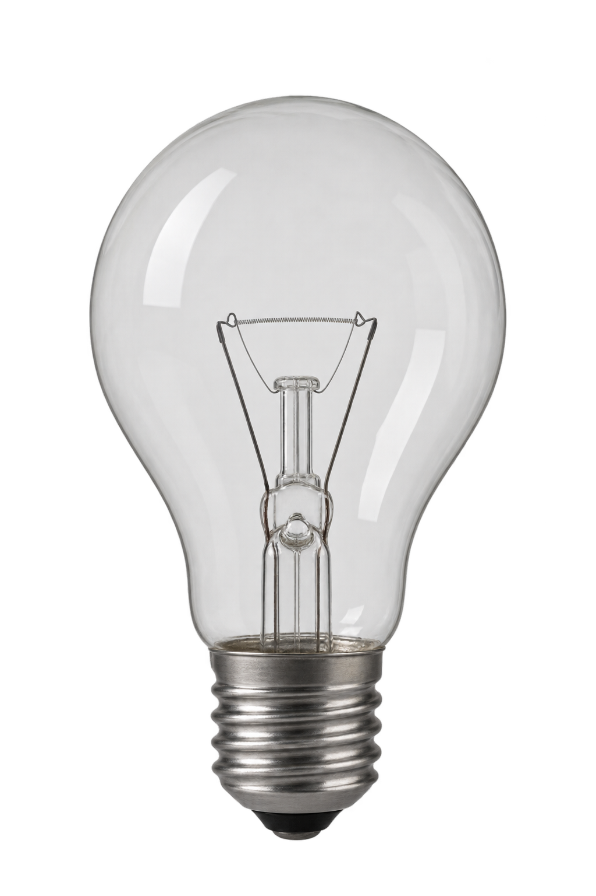

Joyce acredita que consegue se comunicar com Will por meio das luzes de Natal. Sua missão é programar uma lâmpada que possa acender e apagar sempre que o botão for pressionado.
Utilize JavaScript para fazer a lâmpada alternar entre os estados acesa e apagada. Para isso, siga as instruções abaixo.
document.getElementById("lampada")
para acessar a imagem da lâmpada no HTML.
mudarLuz().
Ela será responsável por controlar a lâmpada.
if e else para verificar
se a lâmpada está acesa ou apagada.
.src para trocar
a imagem da lâmpada de acordo com seu estado.
lampada-acesa.png.
lampada-apagada.png.
mudarLuz(). Não é necessário criar
outro botão. Verifique se cada clique alterna
corretamente o estado da lâmpada.

Lembre-se de que você pode utilizar o atributo
src da imagem para verificar ou alterar
o arquivo exibido. A estrutura if/else
permite escolher o que fazer em cada situação.
let lampada = document.getElementById("lampada");
function mudarLuz() {
if (lampada.src.includes("apagada")) {
lampada.src = "../assents/lampada-acesa.png";
} else {
lampada.src = "../assents/lampada-apagada.png";
}
}